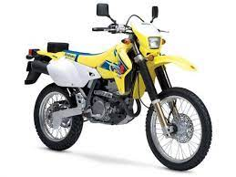

La moto Suzuki dr-z 400 s del año 2001 fue elaborada por la empresa Suzuki y corresponde a la serie de Suzuki dr-z 400 que comprende modelos de diversas cilindradas. Esta moto entra en la categoría de enduro / offroad y el primer modelo de ésta generación de las Suzuki dr-z 400 se comenzó a vender en el año 2000, por lo que tenemos delante una generación de motos que tiene ya 21 años. Para resumirte un poco las especificaciones de esta moto, decirte que tiene una cilindrada de 398.00 cc (24.29 ci) y una potencia total de 40.00 cv (29.2 kw) a 7600 rpm en un motor monocilíndrico, 4 tiempos. Cuando este modelo se comenzó a vender
Suzuki DR-Z 400 E model is a Enduro / offroad bike manufactured by Suzuki . In this version sold from year 2003 , the dry weight is 119.0 kg (262.4 pounds) and it is equipped with a Single cylinder, four-stroke motor. The engine produces a maximum peak output power of 48.00 HP (35.0 kW) @ 9000 RPM and a maximum torque of 41.00 Nm (4.2 kgf-m or 30.2 ft.lbs) @ 7500 RPM . With this drive-train, the Suzuki DR-Z 400 E is capable of reaching a maximum top speed of . On the topic of chassis characteristics, responsible for road holding, handling behavior and ride comfort, the Suzuki DR-Z 400 E has a frame with front suspension being and at the rear, it is equipped with . Stock tire sizes are 80/100-21 on the front, and 110/100-18 on the rear. As for stopping power, the Suzuki DR-Z 400 E braking system includes Single disc size at the front and Single disc size at the back.
| ESPECIFICACIONES GENERALES | |
|---|---|
| Marca | Suzuki |
| Modelo | dr-z 400 s 2001 |
| Año | 2001 |
| Categoría | Enduro / offroad |